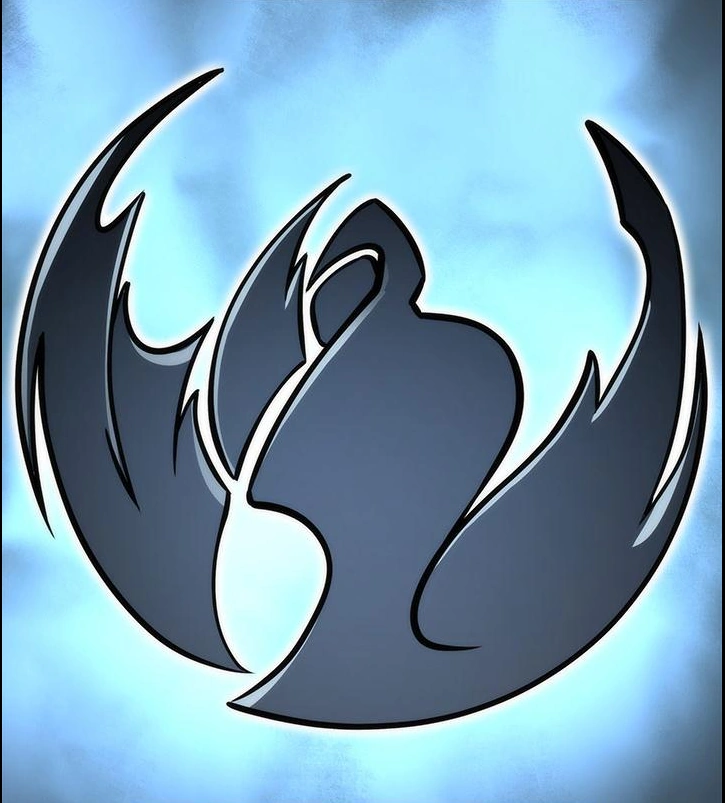

Hunters Guild:

Hunters Guild é a maior e mais forte guilda entre as cinco principais guildas coreanas. Ela está ativa na Área Metropolitana de Seul e é a única guilda na Coreia a ter dois Caçadores Rank-S .
Fame Guild:
Fame Guild é uma das cinco principais guildas coreanas. É ativo na região de Honam e aparentemente tem muito mais Magos do que Lutadores em suas fileiras.
White Tiger Guild:

White Tiger Guild é uma das cinco principais guildas coreanas. Ela atua na Área Metropolitana de Seul e tem uma prática única de treinar seus novos recrutas, fazendo com que eles participem de ataques com os membros mais fortes da guilda em portões de baixo escalão.
Fiend Guild:
Fiend Guild, também conhecida como Grim Reapers ou Reapers Guild NV , é uma das cinco principais guildas coreanas . Costumava ser conhecida como a guilda mais forte da Coreia antes de vários de seus membros partirem para estabelecer a Guilda do Tigre Branco sob o comando de Baek Yoonho . Como a maioria das outras principais guildas coreanas, atua principalmente na área metropolitana de Seul.
Knights Guild:
Knights Guild, é uma das cinco principais guildas coreanas. Embora não tenha Caçadores Rank-S (o mestre da guilda é um Caçador Rank-A), a Guilda dos Cavaleiros tem o maior número de Rank-A entre qualquer outra guilda no país. Está ativo na região de Yeongnam.
Ahjin Guild:
Ahjin Guild, é a guilda mais forte da Coreia . Ao contrário da maioria das principais guildas de outros países, a guilda tem apenas três membros oficiais e apenas um deles é um Caçador Rank-S . No entanto, com os soldados das sombras de Jinwoo incluídos, ela supera todas as outras guildas existentes em força e número, tornando a Guilda Ahjin a guilda mais poderosa do mundo.